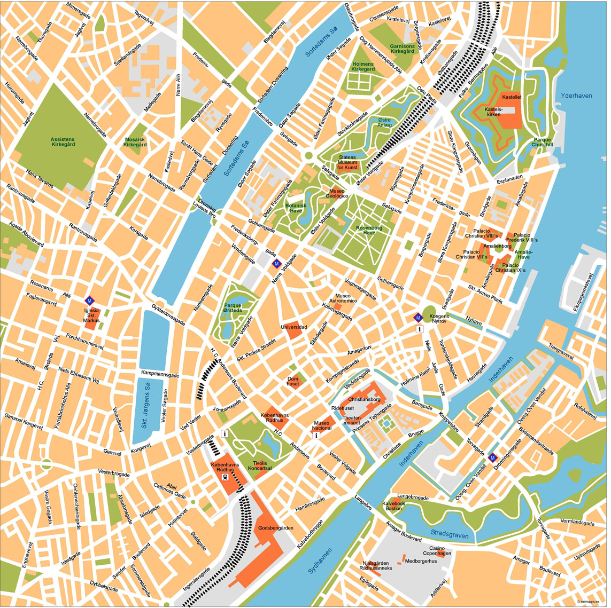
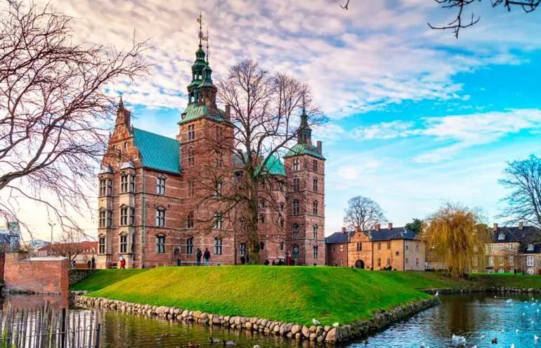

Местоположение

Копенхаген (Kopenhagen) е столицата на Дания, разположен е на източния бряг на остров Зеланд и частично на остров Амагер.
История
Историята на Копенхаген може да се проследи от 800 г., когато на мястото на сегашния център е имало малък рибарски град.
След икономическата криза в края на 20 век, градът е в икономически и културен подем през последното
десетилетие на национално и интернационално ниво. Копенхаген е един от икономическите центрове на Северна Европа и седалище на големи международни компании като Маерск, Карлсберг, Ново Нордиск, Данске Банк.
Забележителности
Старите барокови сгради „съжителстват“ безпроблемно с новите модерни архитектурни хрумвания и са в основата на съвършеното пъстроцветие – особеност на столицата на най-старата европейска монархия. Разстоянията в центъра на града са къси, това позволява да се стигне до повечето забележителности пеша.
Интерес представляват за туристите многото удивителни забележителности на града. Всеки посетил Копенхаген ги препоръчва като
дестинация за следващата Ви екскурзия:
- Замъкът Розенборг (Rosenborg Castle) не е само приказен замък, той е и прекрасен музей на история на културата. Тук можете да видите кралските бижута и датската корона.
Музеят разказва историята на датските крале – от Фредерик II, живял в края на XVI век, до Фредерик VII от XIX век.
- Кристиансборг ( дати Кристиансборг Слот ) - датски кралски дворец от 1740 г., построен на мястото на замъка в Копенхаген през 1167 г .;
след 1849 г. до днес сградата на Датския парламент по фолкетинг . Намира се в старата част на Копенхаген , на малкия остров Slotsholmen .
Той е една от архитектурните атракции на датското кралство.
- Музея Ню Карлсберг - това е музей на изкуствата, разположен в Копенхаген ( Дания ). Основана е през 19 век от сина на основателя на пивоварната Карлсберг ,
Карл Якобсен (1842–1914). Колекцията на музея произхожда от личната колекция на Якобсен.
